Vamos al sitio oficial de chocolate
Copiamos el comando de instalación para powershell V3+
Abrimos el powershell como administrador, pegamos el comando y damos enter.
Set-ExecutionPolicy Bypass -Scope Process -Force; [System.Net.ServicePointManager]::SecurityProtocol = [System.Net.ServicePointManager]::SecurityProtocol -bor 3072; iwr https://chocolatey.org/install.ps1 -UseBasicParsing | iexVamos al sitio oficial de dart copiamos el enlace de upgrade y pegamos en el powershell.
choco upgrade dart-sdkadb usualmente se comunica con los dispositivos vía USB, pero tú puedes también usar adb vía Wi-fi después de una configuración inicial a través de USB.
adb está incluido en el paquete Android SDK Platform-Tools. Puede descargar este paquete con el SDK Manager, que lo instala en android_sdk/platform-tools/. O si desea el paquete independiente de herramientas de plataforma SDK de Android, puede descargarlo aquí.
C:\Users\usuario\AppData\Local\Android\sdk\platform-tools si no lo tenías y lo descargaste, descomprime en algún lugar y actualiza el path en variables de entorno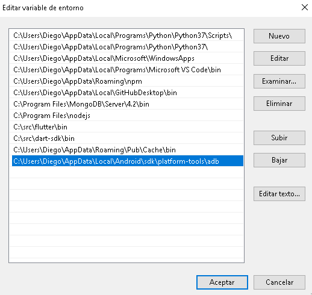
Conecte su dispositivo Android y su computadora host adb a una red Wi-Fi común accesible para ambos.
Si se está conectando a un dispositivo Wear OS, apague Bluetooth en el teléfono que está emparejado con el dispositivo.
Abre las configuraciones de tu teléfono > Wi-Fi > Ajustes adicionales, anota tu dirección IP a la que estás conectado, ejemplo: 192.168.0.100
Conecte el dispositivo a la computadora host con un cable USB.
Configure el dispositivo de destino para escuchar una conexión TCP/IP en el puerto 5555.
adb tcpip 5555
adb connect <device ip addr>:5555
adb devices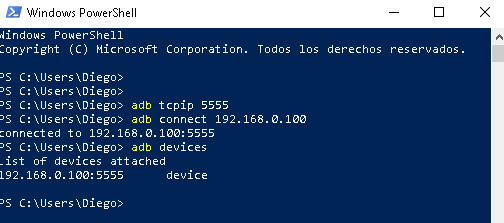
Ahora, está listo para usarse con tus aplicaciones desarrolladas en Android a través de Wi-Fi.
Si alguna vez se pierde la conexión adb:
adb kill-serverLuego comienza de nuevo desde el principio.
Crear apps con la colección de widgets visuales, estructurales, de plataforma, e interactivos de Flutter.
Estos son algunos de los Widgets imprescindibles que debes conocer antes de construir tu primera app Flutter.
Un contenedor primero rodea al child con padding y luego aplica constraints adicionales.
Los contenedores sin hijos intentará ser lo más grandes posible a menos que las restricciones entrantes sean ilimitadas, en cuyo caso intentan ser lo más pequeñas posible. Los contenedores con hijos se adaptan a sus hijos.
El widget Container le ayuda a componer, decorar y colocar widgets secudarios.
Puedes usar propiedades para sus hijos como:
padding: EdgeInsets.all(28.0),
alignment: Alignment.center,Puedes aplicar transformaciones:
transform: Matrix4.rotationZ(0.05),Por ejemplo con el siguite código:
import 'package:flutter/material.dart';void main() { runApp(MaterialApp( home: MyApp(), )); }
class MyApp extends StatefulWidget{ @override _State createState() => _State(); }
class _State extends State<MyApp>{ @override Widget build(BuildContext context) { // TODO: implement build return Scaffold( appBar: AppBar( title: Text('My App'), ), body: Container( padding: EdgeInsets.all(28.0), transform: Matrix4.rotationZ(0.1), child: Center( child: Column( mainAxisAlignment: MainAxisAlignment.center, children: <Widget>[ Text('Aplicación de ejemplo Diego David') ], ) ) ) ); } }
Tenemos el siguite resultado:
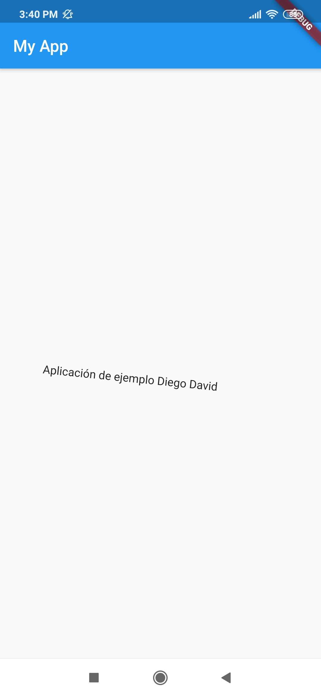
Es un widget que desplega a sus hijos en un arreglo horizontal.
Para hacer que un hijo ocupe todo el espacio horizontal disponible, debe agregar dentro de un Widget Expanded
Es importante saber que el widget Row no se desplaza (y en general se considera un error tener más hijos en una fila de los que caben en la sala disponible).
Para esto considere usar ListView si desea que puedan desplazarse si no hay suficiente espacio.
body: Container(
padding: EdgeInsets.all(28.0),
child: Row(
children: <Widget>[
Expanded(
child: Text('Desarrollo de aplicaciones', textAlign: TextAlign.center),
),
Expanded(
child: Text('Diego David', textAlign: TextAlign.center),
),
Expanded(
child: FittedBox(
fit: BoxFit.contain, // otherwise the logo will be tiny
child: const FlutterLogo(),
),
),
],
),
)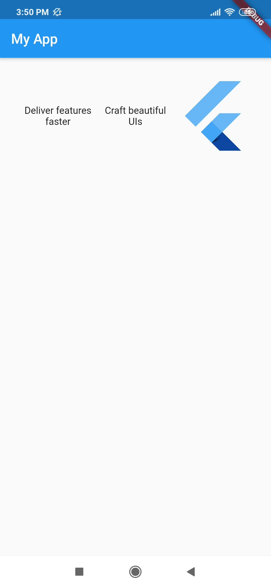
Puede aparece una franja de advertencia amarilla y negra. Esto se debe cuando los contenidos no flexibles de la fila (aquellos que no están envueltos en widgets Expanded o Flexible) son juntos más anchos que la fila en sí, entonces se dice que la fila se ha desbordado. Cuando una fila se desborda, la fila no tiene espacio restante para compartir entre sus elementos secundarios expandidos y flexibles. La fila informa esto dibujando un cuadro de advertencia de rayas amarillas y negras en el borde que se desborda. Si hay espacio en el exterior de la fila, la cantidad de desbordamiento se imprime en letras rojas.
Por ejemplo si tú tienes:
body: Container(
padding: EdgeInsets.all(28.0),
child: Row(
children: <Widget>[
const FlutterLogo(),
const Text("Desarrollando aplicaciones móviles en Flutter con Diego David, este es un ejemplo de desbordamiento, se mostrará un error"),
const Icon(Icons.sentiment_very_satisfied),
],
)
) Observarás algo similar a:
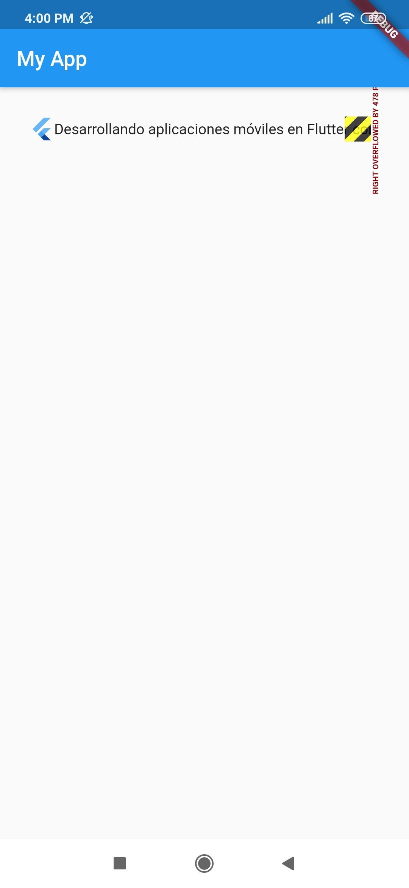
Para solucionar esto envolvemos al segundo hijo en un widget Expanded
body: Container(
padding: EdgeInsets.all(28.0),
child: Row(
children: <Widget>[
const FlutterLogo(),
const Expanded(
child: Text("Desarrollando aplicaciones móviles en Flutter con Diego David, este es un ejemplo de desbordamiento, NO se mostrará un error"),
),
const Icon(Icons.sentiment_very_satisfied),
],
)
) 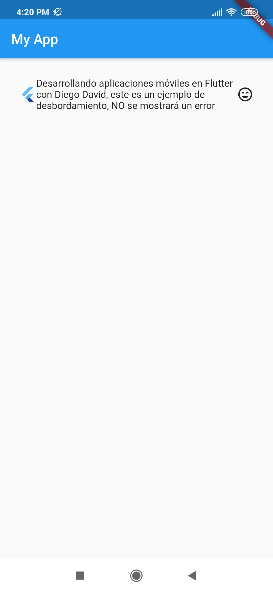
Un widget que desplega sus hijos en un arreglo vertical.
Para hacer que un hijo ocupe todo el espacio vertical disponible, debe agregar dentro de un Widget Expanded
Igual que el widget Row, Column no se desplaza (y en general se considera un error tener más hijos en una columna de los que caben en la sala disponible).
Si tú tienes un hijo, considera usar Align o Center para posicionar al hijo.
El siguiente ejemplo consta de tres hijos.
body: Container(
padding: EdgeInsets.all(28.0),
child: Column(
children: <Widget>[
Text('Desarrollo de aplicaciones'),
Text('con Flutter'),
Expanded(
child: FittedBox(
fit: BoxFit.contain, // otherwise the logo will be tiny
child: const FlutterLogo(),
),
),
],
)
) 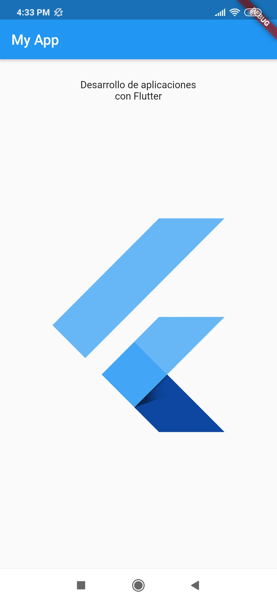
Con crossAxisAlignment alineamos los elementos secundarios, por ejemplo con crossAxisAlignment.start estarán alineados a la izquierda. Con mainAxisSize.min la columna se contrae para adaptarse a los hijos.
body: Container(
padding: EdgeInsets.all(28.0),
child: Column(
crossAxisAlignment: CrossAxisAlignment.start,
mainAxisSize: MainAxisSize.min,
children: <Widget>[
Text('Desarrollo de aplicaciones móviles'),
Text('con Flutter'),
Text('Diego David'),
],
)
) 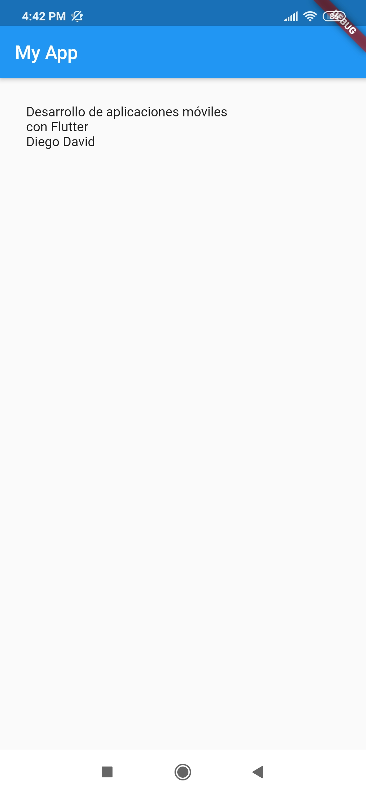
Existen varios cnstructores para especificar una imagen:
new Image, para obtener una imagen de un ImageProvider.new Image.asset, para obtener una imagen de un AssetBundle usando una clave.new Image.network, para obtener una imagen de una URL.new Image.file, para obtener una imagen de un File.new Image.memory, para obtener una imagen de un Uint8List.Admite los siguientes formatos: JPEG, PNG, GIF, GIF animado, WebP, WebP animado, BMP y WBMP.
La imagen se pinta con paintImage.
El constructor predeterminado se puede usar con cualquier proveedor de imágenes. Por ejemplo, para obtener una imagen de internet:
const Image(
image: NetworkImage('https://flutter.github.io/assets-for-api-docs/assets/widgets/owl.jpg'),
) También se puede colocar una imagen de internet con Image.network
body: Container(
padding: EdgeInsets.all(28.0),
child: Column(
crossAxisAlignment: CrossAxisAlignment.start,
mainAxisSize: MainAxisSize.min,
children: <Widget>[
const Image(
image: NetworkImage('https://flutter.github.io/assets-for-api-docs/assets/widgets/owl.jpg')
),
SizedBox(height: 10),
Expanded(
child: Image.network('https://flutter.github.io/assets-for-api-docs/assets/widgets/owl-2.jpg'),
)
],
)
) 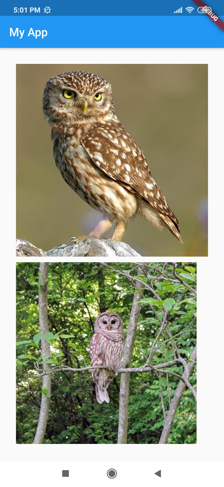
El widget Text despliega un string de texto con un simple estilo. El argumento de estilo es opcional.
body: Container(
padding: EdgeInsets.all(28.0),
child: Column(
crossAxisAlignment: CrossAxisAlignment.start,
mainAxisSize: MainAxisSize.min,
children: <Widget>[
Text(
'¡Hola, $_name! ¿Cómo estás?',
textAlign: TextAlign.center,
overflow: TextOverflow.ellipsis,
style: TextStyle(fontWeight: FontWeight.bold),
)
],
)
) 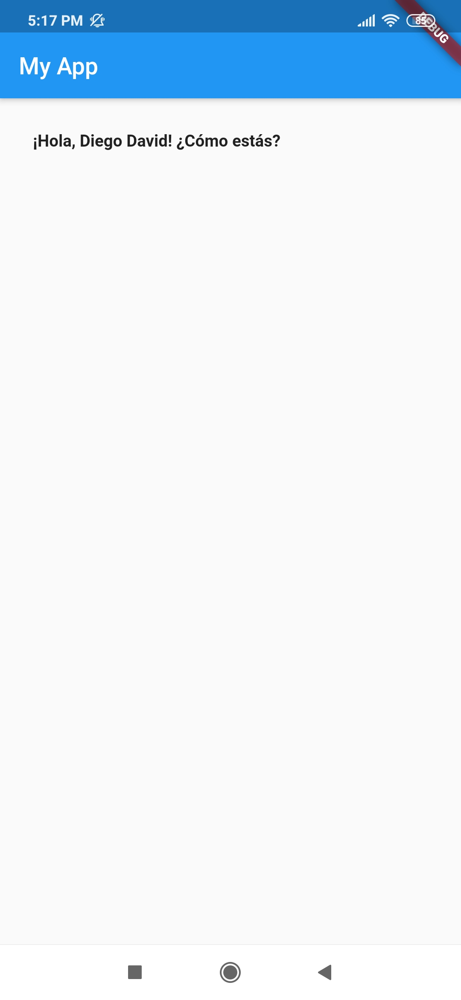
Usando el constructor Text.rich el widget Text puede mostrar un párrafo con TextSpan de estilo diferente.
const Text.rich(
TextSpan(
text: 'Hola,', // default text style
children: <TextSpan>[
TextSpan(text: ' Diego', style: TextStyle(fontStyle: FontStyle.italic)),
TextSpan(text: ' David', style: TextStyle(fontWeight: FontWeight.bold)),
],
),
) 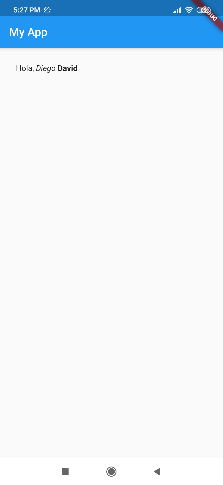
Debe haber un widget de direccionalidad ambiental cuando se usa Icon.
body: Container(
padding: EdgeInsets.all(28.0),
child: Column(
mainAxisAlignment: MainAxisAlignment.spaceAround,
children: <Widget>[
Icon(
Icons.android,
color: Colors.green,
size: 24.0,
semanticLabel: 'Text to announce in accessibility modes',
),
Icon(
Icons.developer_mode,
color: Colors.amber,
size: 30.0,
),
Icon(
Icons.settings_cell,
color: Colors.blue,
size: 36.0,
),
],
)
)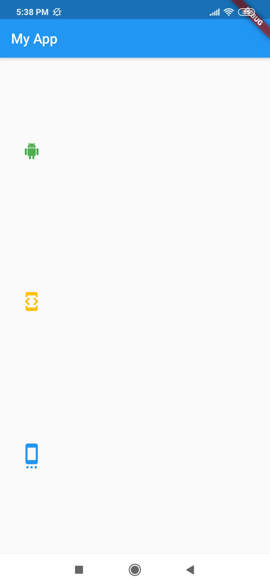
Un RaisedButton es basado en el widget Material cuyo Material.elevation incrementa cuando el botón es presionado.
Ejemplo con RaisedButton deshabilitado, habilitado y degradado.
body: Container(
padding: EdgeInsets.all(28.0),
child: Center(
child: Column(
mainAxisSize: MainAxisSize.min,
children: <Widget>[
const RaisedButton(
onPressed: null,
child:
Text('Botón deshabilitado', style: TextStyle(fontSize: 20)),
),
const SizedBox(height: 30),
RaisedButton(
onPressed: () {},
child: const Text('Botón habilitado',
style: TextStyle(fontSize: 20)),
),
const SizedBox(height: 30),
RaisedButton(
onPressed: () {},
textColor: Colors.white,
padding: const EdgeInsets.all(0.0),
child: Container(
decoration: const BoxDecoration(
gradient: LinearGradient(
colors: <Color>[
Color(0xFF0D47A1),
Color(0xFF1976D2),
Color(0xFF42A5F5),
],
),
),
padding: const EdgeInsets.all(10.0),
child: const Text('Botón gradiente',
style: TextStyle(fontSize: 20)),
),
),
],
),
)
) 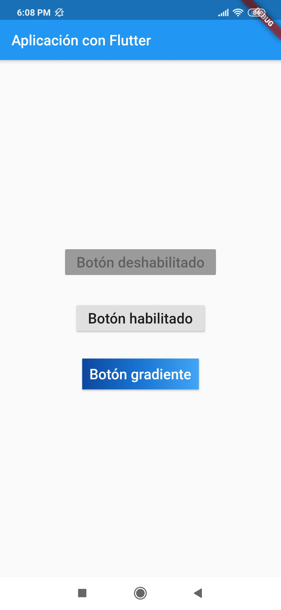
Un widget que dibuja un cuadro que representa dónde se agregarán otros widgets en algún momento.
Este widget es útil durante el desarrollo para indicar que la interfaz aún no está completa.
De forma predeterminada, el marcador de posición se ajusta a su contenedor. Pero puedes limitar el ancho y alto de acuerdo con el fallbackWidth y fallbackHeight. Incluso puedes cambiar el color de la X y el ancho de las líneas con strokeWidth.
Placeholder puede tomar el lugar de un componente de la IU.
body: Container(
padding: EdgeInsets.all(28.0),
child: Center(
child: Column(
mainAxisSize: MainAxisSize.min,
children: <Widget>[
Placeholder(
fallbackHeight: 100,
fallbackWidth: 70,
color: Colors.teal,
strokeWidth: 10,
),
Placeholder(
fallbackHeight: 100,
fallbackWidth: 10,
color: Colors.amber,
strokeWidth: 5,
),
Row(
mainAxisSize: MainAxisSize.max,
children: <Widget>[
Placeholder(
fallbackHeight: 50,
fallbackWidth: 70,
color: Colors.green,
strokeWidth: 5,
),
Placeholder(
fallbackHeight: 50,
fallbackWidth: 30,
color: Colors.black,
strokeWidth: 5,
),
]
)
],
),
)
) Widgets visuales, de comportamiento, ricos en movimientomo implementando las guías de Material Design.
Implementa la estructura de diseño visual de diseño de material básico.
class _State extends State<MyApp> { static const String _title = 'Aplicación con Flutter'; int _count = 0;
@override Widget build(BuildContext context) { // TODO: implement build return Scaffold( appBar: AppBar( title: Text(_title), ), body: Container( padding: EdgeInsets.all(28.0), child: Center(child: Text('You have pressed the button $_count times.')), ), floatingActionButton: FloatingActionButton( onPressed: () => setState(() => _count++), tooltip: 'Increment Counter', child: const Icon(Icons.add), ), ); } }
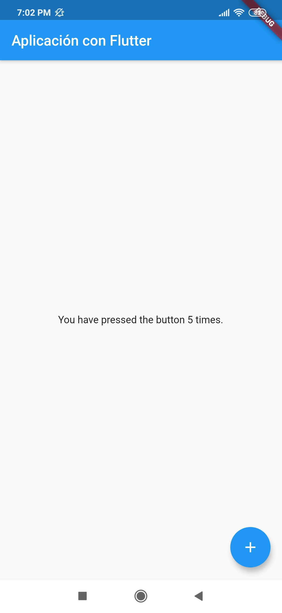
Las barras de navegación inferiores facilitan explorar y cambiar entre las vistas de nivel superior en un solo toque. El widget BottomNavigationBar implementa este componente.
Un widget de material que se muestra en la parte inferior de una aplicación para seleccionar entre un pequeño número de vistas, generalmente entre tres y cinco.
Una barra de navegación inferior generalmente se usa junto con un Scaffold.
El tipo de navegación cambia la forma de mostrar los elementos.
BottomNavigationBarType.fixed, el valor predeterminado cuando hay menos de cuatro elementos.BottomNavigationBarType.shifting , el valor predeterminado cuando hay cuatro o más elementos.El siguiente ejemplo muestra un BottomNavigationBar que tiene tres elementos y el currentIndex se establece en el índice 0. La función _onItemTapped cambia el índice del elemento seleccionado y muestra un mensaje correspondiente en el centro.
import 'package:flutter/material.dart';void main() { runApp(MaterialApp( title: "Diego App", home: MyApp(), )); }
class MyApp extends StatefulWidget { @override _State createState() => _State(); }
class _State extends State<MyApp> { static const String _title = 'Aplicación con Flutter';
int _selectedIndex = 0; static const TextStyle optionStyle = TextStyle(fontSize: 30, fontWeight: FontWeight.bold);
static const List<Widget> _widgetOptions = <Widget>[ Text( 'Index 0: Hogar', style: optionStyle, ), Text( 'Index 1: Negocio', style: optionStyle, ), Text( 'Index 2: Escuela', style: optionStyle, ), ];
void _onItemTapped(int index) { //select index setState(() { _selectedIndex = index; }); }
@override Widget build(BuildContext context) { // TODO: implement build return Scaffold( appBar: AppBar( title: Text(_title), ), body: Center( child: _widgetOptions.elementAt(_selectedIndex), ), bottomNavigationBar: BottomNavigationBar( items: const <BottomNavigationBarItem>[ BottomNavigationBarItem( icon: Icon(Icons.home), title: Text('Home'), ), BottomNavigationBarItem( icon: Icon(Icons.business), title: Text('Business'), ), BottomNavigationBarItem( icon: Icon(Icons.school), title: Text('School'), ), ], currentIndex: _selectedIndex, selectedItemColor: Colors.amber[800], onTap: _onItemTapped, ),
);
} }
Un widget de diseño de material que muestra una fila horizontal de pestañas.
Por lo general, se crea como la parte AppBar.bottom de una AppBar y junto con una TabBarView.
Si no se proporciona un TabController, se debe proporcionar un padre DefaultTabController en su lugar. La pestaña TabController.length del controlador de pestañas debe ser igual a la longitud de la lista de pestañas y la longitud de la lista TabBarView.children.
Requiere que uno de sus padres sea un widget Material.
Coordina la selección de pestañas entre un TabBar y un TabBarView.
La propiedad index es el índice de la pestaña seleccionada y animation representa las posiciones de desplazamiento actuales de la barra de pestañas. El índice de la pestaña seleccionada se puede cambiar con animateTo.
Para el siguiente ejemplo usamos SingleTickerProviderStateMixin
import 'package:flutter/material.dart';void main() { runApp(MaterialApp( title: "Diego App", home: MyApp(), )); }
class MyApp extends StatefulWidget { const MyApp({ Key key }) : super(key: key);
@override _State createState() => _State(); }
class _State extends State<MyApp> with SingleTickerProviderStateMixin { static const String _title = 'Aplicación con Flutter';
final List<Tab> myTabs = <Tab>[ Tab(text: 'IZQUIERDA'), Tab(text: 'DERECHA'), ];
TabController _tabController;
@override void initState() { super.initState(); _tabController = TabController(vsync: this, length: myTabs.length); }
@override void dispose() { _tabController.dispose(); super.dispose(); }
@override Widget build(BuildContext context) { // TODO: implement build return Scaffold( appBar: AppBar( title: Text(_title), bottom: TabBar( controller: _tabController, tabs: myTabs, ), ), body: TabBarView( controller: _tabController, children: myTabs.map((Tab tab) { final String label = tab.text.toLowerCase(); return Center( child: Text( 'Esta es la pestaña $label', style: const TextStyle(fontSize: 36), ), ); }).toList(), ),
);
} }
Se basa en una aplicación WidgetsApp agregando funcionalidades específicas de material-design, como AnimatedTheme y GridPaper.
El MaterialApp configura el nivel superior del Navigator para buscar rutas en el siguiente orden:
home, si no es nula es usada.routes es usada, si tiene una entrada para la ruta.onGenerateRoute es llamado.onUnknownRoute es llamado.El siguiente ejemplo muestra como crear MaterialApp que usa los Mapas de routes para definir la ruta "home" y la ruta "about".
class _State extends State<MyApp> { static const String _title = 'Aplicación con Flutter';
@override Widget build(BuildContext context) { // TODO: implement build return MaterialApp( routes: <String, WidgetBuilder>{ '/': (BuildContext context) { return Scaffold( appBar: AppBar( title: const Text('Home Route'), ), ); }, '/about': (BuildContext context) { return Scaffold( appBar: AppBar( title: const Text('About Route'), ), ); } }, ); } }
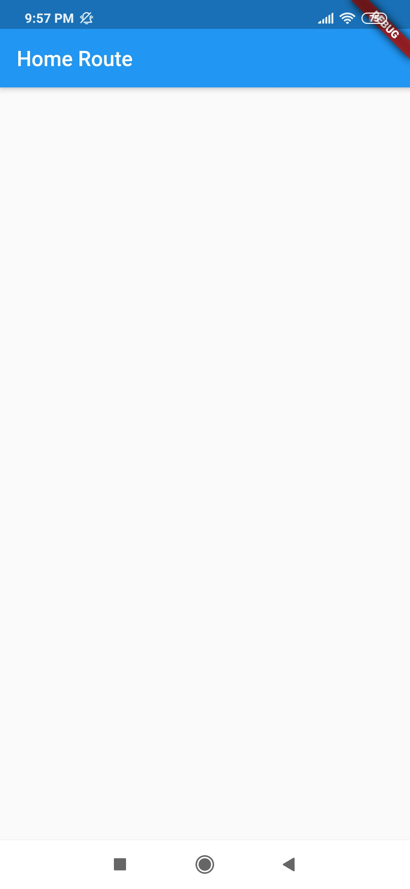
Un panel de diseño de material que se desliza horizontalmente desde el borde de un Scaffold para mostrar enlaces de navegación en una aplicación.
Se suelen usar con la propiedad Scaffold.drawer. El elemento secundario de Drawer suele ser ListView cuyo primer elemento secundario es un DrawerHeader que muestra información de estado sobre el usuario actual.
Los elementos secundarios de Drawer a menudo se construyen con ListTile y por lo general concluyen con un AboutListTile.
El AppBar automáticamente despliega un IconButton para mostrar el Drawer
import 'package:flutter/material.dart'; import 'package:flutterwidgetsbasics/second.dart';void main() { runApp(MaterialApp( home: MyApp(), routes: <String, WidgetBuilder>{ "/second":(BuildContext context) => SecondActivity() }, )); }
class MyApp extends StatefulWidget{ @override _State createState() => _State(); }
class _State extends State<MyApp>{ @override Widget build(BuildContext context) { // TODO: implement build return Scaffold( appBar: AppBar( title: Text('My App'), ), drawer: Drawer( child: ListView( padding: EdgeInsets.zero, children: <Widget>[ UserAccountsDrawerHeader( //DrawerHeader( //child: Text('Header'), accountName: Text('Diego David'), accountEmail: Text('diego@gmail.com'), currentAccountPicture: CircleAvatar( backgroundColor: Colors.amber, child: Text("D.D"), ), otherAccountsPictures: <Widget>[ CircleAvatar( backgroundColor: Colors.white, child: Text('A'), ) ], decoration: BoxDecoration( color: Colors.blue, ), ), ListTile( title: Text('Ir a segunda actividad'), trailing: Icon(Icons.looks_two), onTap: (){ Navigator.pop(context); Navigator.of(context).pushNamed("/second"); // Navigator.pushNamed(context, "/second"); }, ), ListTile( title: Text('Opcion 2'), trailing: Icon(Icons.android), onTap: (){ Navigator.pop(context); }, ), ListTile( title: Text('Cerrar'), trailing: Icon(Icons.close), onTap: (){ Navigator.pop(context); }, ), ], ) ) ); } }
Un Drawer se puede cerrar llamando a Navigator.pop.
ListTile(
leading: Icon(Icons.change_history),
title: Text('Change history'),
onTap: () {
// change app state...
Navigator.pop(context); // close the drawer
},
);Los diálogos simples pueden proporcionar detalles o acciones adicionales sobre un elemento de la lista. Por ejemplo, pueden mostrar iconos de avatares que clarifican el subtexto u otras acciones ortogonales (como agregar una cuenta).
SimpleDialog ofrece al usuario escoger entre varias opciones.SimpleDialogOption.AlertDialog.showDialog, que muestra el cuadro de diálogo.En el siguiente ejemplo se le pide al usuario que escoja entre dos opciones. Estas opciones se representan como una enumeración. Si se cancela el resultado devuelto es un nulo.
void main() { runApp(MaterialApp( home: MyApp(), )); }class MyApp extends StatefulWidget { @override _State createState() => _State(); }
enum Options{YES,NO}
class _State extends State<MyApp> { String _value = '';
void _setValue(String value) => setState(()=> _value = value);
Future _event() async{ switch( await showDialog( context: context, child: SimpleDialog( title: Text('Texto del dialog'), children: <Widget>[ SimpleDialogOption(child: Text('Ok'), onPressed: (){Navigator.pop(context, Options.YES);},), SimpleDialogOption(child: Text('Cancel'), onPressed: (){Navigator.pop(context, Options.NO);},) ], ), ) ){ case Options.YES: _setValue("YES"); break; case Options.NO: _setValue("NO"); break; }; //switch }//_event
@override Widget build(BuildContext context) { // TODO: implement build return Scaffold( appBar: AppBar( title: Text('My App'), ), body: Container( padding: EdgeInsets.all(28.0), child: Center( child: Column( children: <Widget>[ Text(_value), RaisedButton( onPressed: _event, child: Text('Click'), ) ], ) ) ) ); } }
Las alertas son interrupciones urgentes que requieren reconocimiento e informan al usuario sobre una situación. El widget AlertDialog implementa este componente.
class MyApp extends StatefulWidget { @override _State createState() => _State(); }class _State extends State<MyApp> {
Future _showAlert(BuildContext context, String msg) async{ return showDialog(context: context, child: AlertDialog( title: Text(msg), actions: <Widget>[ FlatButton( onPressed: ()=> Navigator.pop(context), child: Text('Ok'), ) ], )); }
@override Widget build(BuildContext context) { // TODO: implement build return Scaffold( appBar: AppBar( title: Text('My App'), ), body: Container( padding: EdgeInsets.all(28.0), child: Center( child: Column( children: <Widget>[ Text('Texto'), RaisedButton( onPressed: ()=> _showAlert(context, 'Mensaje de alerta'), child: Text('Click alert'), ) ], ) ) ) ); } }
Wigets que brindan animaciones a tu aplicación.
Versión animada de Container que gradualmente cambia sus valores en un periodo de tiempo.
AnimatedContainer automáticamente animará entre los viejos y antiguos valores de propiedades cuando ellos cambian.Container con su AnimationController interno.El siguiente ejemplo hace una transición de un Contenedor animado entre dos estados.
class _State extends State<MyApp> { bool selected = false;
@override Widget build(BuildContext context) { // TODO: implement build return Scaffold( appBar: AppBar( title: Text('My App'), ), body: GestureDetector( onTap: () { setState(() { selected = !selected; }); }, child: Center( child: AnimatedContainer( width: selected ? 200.0 : 100.0, height: selected ? 100.0 : 200.0, color: selected ? Colors.red : Colors.blue, alignment: selected ? Alignment.center : AlignmentDirectional.topCenter, duration: Duration(seconds: 2), curve: Curves.fastOutSlowIn, child: FlutterLogo(size: 75), ), ), ) ); } }
Un widget que se desvanece entre dos hijos dados y se anima entre sus tamaños.
crossFadeState. firstCurve y secondCurve representan las curvas de opacidad de los dos hijos.El siguiente código se desvanece entre dos representaciones del logotipo de Flutter. Depende del valor de _first, cuando es verdadero se muestra el primer logotipo, de lo contrario se muestra el segundo logotipo.
class _State extends State<MyApp> { bool _first = false;
@override Widget build(BuildContext context) { // TODO: implement build return Scaffold( appBar: AppBar( title: Text('My App'), ), body: GestureDetector( onTap: () { setState(() { _first = !_first; }); }, child: Center( child: AnimatedCrossFade( duration: const Duration(seconds: 3), firstChild: const FlutterLogo(style: FlutterLogoStyle.horizontal, size: 100.0), secondChild: const FlutterLogo(style: FlutterLogoStyle.stacked, size: 100.0), crossFadeState: _first ? CrossFadeState.showFirst : CrossFadeState.showSecond, ) ), ) ); } }
Llega un punto en el que necesitas compartir el estado de la aplicación entre pantallas, a través de tu aplicación. A continuación, veremos los conceptos básicos del manejo del estado en las aplicaciones Flutter.
declarativo. Esto significa que Flutter construye su interfaz de usuario para reflejar el estado actual de su aplicación:

No hay necesidad de serializarlo, y no cambia de manera compleja. En otras palabras, no es necesario utilizar técnicas de gestión de estado (“ScopedModel”, “Redux”, etc.) en este tipo de estados. Todo lo que necesitas es un “StatefulWidget”.
En el siguiente ejemplo, _índice es un estado efímero.
class MyHomepage extends StatefulWidget { @override _MyHomepageState createState() => _MyHomepageState(); }class _MyHomepageState extends State<MyHomepage> { int _index = 0;
@override Widget build(BuildContext context) { return BottomNavigationBar( currentIndex: _index, onTap: (newIndex) { setState(() { _index = newIndex; }); }, // ... items ... ); } }
setState() y un campo dentro de la clase StatefulWidget es completamente natural. _index. _índice se restablezca a cero.Llamamos estado de la aplicación cuando se quiere compartir en muchas partes de la aplicación, y se desea mantener entre sesiones de usuario.
Ejemplos de estados de aplicación:
No existe una regla clara y universal para distinguir si una variable en particular es efímera o es estado de aplicación. A veces, tendrás que refactorizar uno en otro.
Por esa razón, toma el siguiente diagrama proporcionado por Flutter (con el entendimiento de que exista la probabilidad de que algo sea falso o incorrecto):
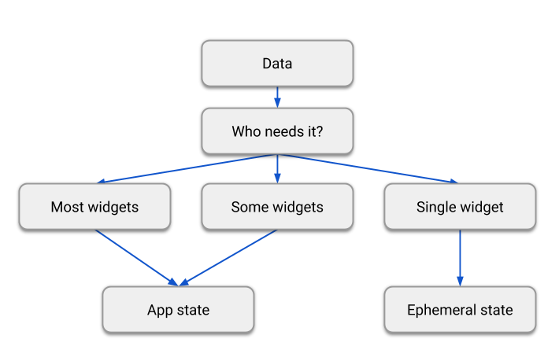
En resumen, hay dos tipos conceptuales de estado en cualquier aplicación Flutter. El estado efímero puede ser implementado usando State y setState(), y a menudo es local a un solo widget. El resto es el estado de la aplicación.
Usaremos Provider que es fácil de entender y no utiliza mucho código. También utiliza conceptos que son aplicables en todos los demás enfoques.
Ejemplo sencillo:
Una aplicación que tiene tres pantallas separadas:
* una ventana de inicio de sesión representado por el widget: MyLoginScreen
* una ventana de catálogo representado por el widget: MyCatalog
* una ventana de carrito representado por el widget: MyCart
La pantalla del catálogo incluye una barra de aplicaciones personalizada (MyAppBar) y una vista de desplazamiento de muchos elementos de la lista (MyListItems).
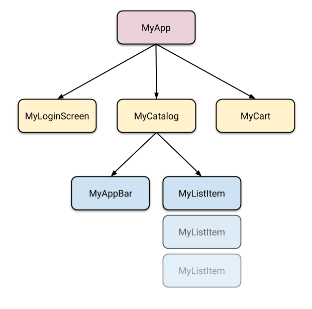
Así que tenemos al menos 6 subclases de Widget. Muchos de ellos necesitarán acceso a un estado que “pertenece” a otra parte. Por ejemplo, cada MyListItem podrá añadir al carrito. También podría querer ver si el artículo que está mostrando ya está en el carrito.
En Flutter, tiene sentido mantener el estado por encima de los widgets que lo utilizan. Es difícil cambiar imperativamente un widget desde fuera, llamando a un método en él.
En Flutter, construyes un nuevo widget cada vez que su contenido cambia. En lugar de MyCart.updateWith(somethingNew) (una llamada de método) usas MyCart(contents) (un constructor).
// CORRECTO
void myTapHandler(BuildContext context) {
var cartModel = somehowGetMyCartModel(context);
cartModel.add(item);
} Con esto MyCart tiene sólo una ruta de código para construir cualquier versión de la interfaz de usuario.
// CORRECTO
Widget build(BuildContext context) {
var cartModel = somehowGetMyCartModel(context);
return SomeWidget(
// Just construct the UI once, using the current state of the cart.
// ···
);
} MyCart no necesita preocuparse por el ciclo de vida soló declara qué mostrar para cualquier contents dado. Cuando eso cambia, el widget MyCart viejo desaparecer y es completamente reemplazado por uno nuevo.

Cuando el usuario hace clic en uno de los artículos del catálogo, se añade al carrito.
Una opción simple es proporcionar un callback a la que MyListItem puede llamar cuando se hace clic en el.
Entonces, dentro de MyCatalog puedes tener lo siguiente:
@override Widget build(BuildContext context) { return SomeWidget( // Contruye el widget, pasando la referencia al método de superior. MyListItem(myTapCallback), ); }
void myTapCallback(Item item) { print('user tapped on $item'); }
Esto funciona bien, pero para el estado de la aplicación que necesitas modificar desde muchos lugares diferentes, tendrías que pasar un montón de llamadas de retorno.
Afortunadamente, Flutter tiene mecanismos para que los widgets proporcionen datos y servicios a sus descendientes.
Usaremos un paquete que funciona con los widgets de bajo nivel pero que es fácil de usar. Se llama provider.
Con provider, no tienes que preocuparte por las llamadas de retorno o InheritedWidgets. Pero necesitas entender 3 conceptos:
Gestionaremos el estado del carro en un ChangeNotifier.
class CartModel extends ChangeNotifier { /// Estado privado del carrito. final List<Item> _items = [];/// Una vista inmodificable de items en el carrito. UnmodifiableListView<Item> get items => UnmodifiableListView(_items);
/// El precio total actual de todos los items (asumiendo que todos cuestan $42). int get totalPrice => _items.length * 42;
/// Añadir [item] al carro. Esta es la única manera de modificar el carrito desde fuera. void add(Item item) { _items.add(item); // Esta llamada dice a los widgets que están escuchando este modelo que se reconstruyan. notifyListeners(); } }
El único código que es específico de ChangeNotifier es la llamada a notifyListeners()
Cuando creamos apps conectadas a la red, lo más probable es que tengas que consumir algún JSON, tarde o temprano.
Veremos dos estrategias generales para trabajar con JSON:
Para proyectos pequeños usar auto-generación de código puede ser exagerado.
Implica pasar una cadena JSON en bruto a la función json.decode() y luego buscar los valores que necesita en el Map<String, dynamic> que devuelve el método.
Flutter tiene la biblioteca dart:convert que incluye un sencillo codificador y decodificador JSON.
Aquí hay un ejemplo de un JSON para un modelo sencillo.
{
"name": "Diego David",
"email": "diego@example.com"
} Con dart:convert, puedes codificar este modelo JSON de dos maneras.
Puedes decodificar el JSON llamando al método json.decode
Map<String, dynamic> user = jsonDecode(jsonString);
print('Hola, ${user['name']}!'); print('Enviamos el enlace de verificación a ${user['email']}.');
Desafortunadamente, jsonDecode() simplemente devuelve un Map<String, dynamic>, significando que no conoces los tipos de valores hasta el tiempo de ejecución.
Con esta aproximación, pierdes la mayoría de las características del tipado estático del lenguaje:
Podemos resolver los problemas anteriores introduciendo una clase de modelo plana, llamada User en este ejemplo. Dentro de la clase User, encontrarás:
User.fromJson(), para construir una nueva instancia de User desde una estructura de mapa.toJson(), que convierte una instancia User en un mapa.class User { final String name; final String email;User(this.name, this.email);
User.fromJson(Map<String, dynamic> json) : name = json['name'], email = json['email'];
Map<String, dynamic> toJson() => { 'name': name, 'email': email, }; }
Con esto la responsabilidad de la lógica de decodificación esta ahora situada dentro del propio modelo. Con esta aproximación, puedes decodificar un usuario fácilmente.
Map userMap = jsonDecode(jsonString); var user = new User.fromJson(userMap);
print('Hola, ${user.name}!'); print('Enviamos el enlace de verificación a ${user.email}.');
Para codificar un usuario, pasa el objeto User al método jsonEncode(). No necesitas llamar al método toJson(), porque jsonEncode() ya hace esto por ti.
String json = jsonEncode(user);En la práctica, los métodos User.fromJson() y User.toJson() necesitan ambos tener test unitarios para verificar un comportamiento correcto.
Sin embargo, los escenarios del mundo real no son normalmente tan simples. Es poco probable que use respuestas JSON tan pequeñas.
Aunque hay otras bibliotecas disponibles, esta guía usa el paquete json_serializable, un generador de código automatizado que genera el boilerplate del JSON serializado por ti. Esto te ayuda a minimizar el riesgo de tener excepciones por la serialización JSON en tiempo de ejecución.
Para incluir json_serializableen tu proyecto, necesitas una dependencia regular, y dos dev dependencies.
dependencies: # Tus otras dependencias regulares aquí json_annotation: ^2.0.0dev_dependencies:
Tus otras dev_dependencies aquí
build_runner: ^1.0.0 json_serializable: ^2.0.0
Lo siguiente muestra como convertir una clase User en una clase json_serializable.
import 'package:json_annotation/json_annotation.dart';part 'user.g.dart';
@JsonSerializable()
class User { User(this.name, this.email);
String name; String email;
factory User.fromJson(Map<String, dynamic> json) => _$UserFromJson(json);
Map<String, dynamic> toJson() => _$UserToJson(this); }
Con esta configuración, el auto-generador de código fuente, genera código para codificar y decodificar los campos name y email desde JSON.
Ejecutando flutter pub run build_runner build en la raíz del proyecto, generas el código de serialización JSON para tus modelos, siempre que sea necesario. Esto desencadena una única compilación que pasa por los ficheros fuente, elige los relevantes, y genera el código de serialización necesario para ellos.
Un watcher hace nuestro proceso de auto-generación de código más conveniente. Este observa cambios en los ficheros de nuestro proyecto y compila automáticamente los archivos necesarios cuando se necesita. Inicia el watcher ejecutando flutter pub run build_runner watch en la raíz del proyecto.
El auto-generador de código fuente crea un fichero llamado user.g.dart, que tiene toda la lógica de serialización necesaria. Ya no tienes que escribir más, pruebas automatizadas para asegurar que la serailización funciona